|
1/89、计算器和Fibonacci Atommann |
|
本文将讲述一个被数学爱好者反复发现过的数学事实，而我又碰巧独立发现了一次。 一、Von Neumann 异想天开的除法 |
| 稍微观察就能发觉其中的奥妙，而且，用这个方法心算起来非常快！它把商数传下去做 2
的被除数，有一个“时间延迟”，非常有意思。
我看过他的方法之后惊呆了，太巧妙了！可是为什么能这样除呢？那么，我想1/29、1/39、1/49、…、1/89，1/99都能这么算吗？ |
|
故事讲到这儿还没有什么新奇的地方，转机发生在一个下午。那天下午我打完篮球，就准备到办公室休息一下。刚刚走进办公室，发现门口的桌子上面摆着一个计算器，随手拿起来，或许是打完篮球异常兴奋，正好又想到了1/19这个好玩的分数。 事情不会这么巧合吧？于是决定仔细算一算，为什么会是112359呢？Fibonacci数列的前几项为何又会在这儿出现呢？它们有联系吗？（总之，是一头雾水，满脑子的问号。） |
| Fn 表示 Fibonacci数列的第 n 项。当时，是先写出了右边的小数重叠相加，左边的 Fibonacci 数列表达式是观察完小数之后再加上去的。
这个结果让我很满意，这正是我所期望的方向！这大概让我明白了那个9是怎么出来的！ |
| 二、猜想 |
| 通过上面所画出的累加式，通过观察，能够写出下面的猜想式①（从匈牙利人那儿借的符号）： |
|  |
当然，可以简便地写成下面的形式②： |
|
|
|
|
| 更妙的，是下面这个式子（通项公式），这个公式有好几种写法，我习惯用这一个： |
| 可以在《数学模型选谈》P63上看到上面式子简洁、清晰的证明。 我兴奋极了！这是真的吗？ 1/89真的等于这一个无穷级数之和吗？ 证明！如果我能证明它不就行了吗？是啊！天渐渐黑了下来，从我住在三楼的小房间向远处望去，天空被太阳的余辉染成了金黄色，远处是我喜欢的山，外面是我喜爱的树，生活真美！ 我开始证明下午的猜想： |
| 三、我可以证明它吗？ |
|
最初，我把1/89展开成小学时的除法式子进行观察，行不通。我继续尝试各种组合方式，稿纸画完了好几张，还是证不出结果，没有看到任何联系。没一会儿就到了深夜12点，为了窗户不至于发出强光让老板知道，我点上了特意从小店买回的蜡烛。烛光让我想起上初中晚自习停电时玩蜡烛的一些美好情节。（那时停电，同学们都准备有煤油灯，自习时把熔化的蜡滴进煤油里，会形成糊状物。）
|
| 首先想到的是把Fibonacci数列的通项公式代入式子②的右边，进行了一些常规计算： |
| 为了方便，用Ｃ代表式子中的常数。接着往下算，问题逐渐变得清晰起来： |
| 其中 |
|  |
| 这样表达起来计算会方便一些，把黄金数φ代入，我先算了一下Ａ： |
| 哈哈，眼前顿时为之一亮！这正好是一个等比数列啊！而且： |
| 于是，马上得到结果： |
| 那我用同样的方法来求Ｂ： |
| 代入黄金数φ进行化简，方便对Ｂ进行进一步计算： |
| 啊！真高兴，原来得出了一个和Ａ对称的式子！也是一个等比数列，而且公比的绝对值显然是小于１的，求和： |
| 最后，把它们“拼装”起来，就可以了： |
|  |
|
这正是我最初所期望的结果啊！我在日记本上写道：Yeah! I proved it! 最初自己提出的问题，终于又被自己给证明了，我高兴了好几天！在这接下来的几天中，我继续对这个小问题进行探索。（因为那个工厂在山脚下，比较偏僻，有一个数学问题做，当然很满足。） 我感到这个式子很有意思：首先，一个整数（并且 89 还是一个素数）的倒数被分解成了两个根式之和，并且这两个根式是对称的，它们只有符号不一样而已！我感觉到一种数学公式的对称美。 我要诚实地指出，证明过程中我用 Wolfram 的 Mathematica进行验算，我的猜想是正确的，但是，计算不能代替证明！Mathematica 给了我很多提示和帮助。做学问，来不得半点虚假，要绝对的诚实！ |
| 四、如果把 10 换成 x 呢？ |
| 现在我终于可以不用加匈牙利人那古怪的问号了！我开始想：如果把 10 换成任意整数 x，又会怎么样呢？因为在数学上，常能从特殊情况想到它的一般情况。当然，我暂时没有考虑收敛与发散的问题，就算开了。用同样的方法，我得到了下面的式子： |
| 原来 1/89 只是它的一个特殊情况啊！把 x=10 代入上式得：1/(10*10-10-1)=1/89。至于收不收敛的问题可以这样考虑，因为和 Fibonacci 相关的无穷级数可以被分成两个无穷级数之和，分别考虑其通项（黄金数和 x 的组成的式子），看其绝对值是否小于 1 就可判定这个级数是否收敛。 |
| 上面这个式子让我展开了很多联想。继而，我又考查了方程的两个根： |
只要观察这两个根，把它和上面得出的式子相联系，代入分母，就能把它分解成两个根式相加的形式。问题就相当明了啦。当然，这都是事后才想到的。 我知道了这个式子是正确的，让人很高兴。因为我从来没有在书上看到过它。（当然，这说明我读的书太少了）感觉自己仿佛在数学世界中玩耍，无意中发现了一朵长在山间小溪边的数学小花。陪伴它数日，给我带来快乐！ |
| 五、Mathematica、素数、调和级数 |
|
我把具体数字代入多项式中进行计算，发现一个现象：这个多项式会生成很多素数！而且最初素数出现得还很频繁，密度很大，到后面就越来越稀疏，越来越稀疏了，如同自然数中的素数分布一样。89 是 Fibonacci数列中的一项，同时也是一个素数。那么我产生了两个疑问： 1. 多项式会生成无穷多个素数吗？ 2. Fibonacci 数列中有无穷多个素数吗？ 当然，这些问题远远超出了我的能力！ 由于 Fibonacci 的原因，我对无穷级数发生了浓厚的兴趣。正好，我的皮箱里有一本西安交大编的自考书《高等数学》，说实话，这本书至今我都还没有读通。是在重庆上清寺买的，在外打工，我都带着，有时翻翻。我直接翻到讲级数那一章，（天呀，那是在书的最后！）幸好，讲的也不难。我看到一个例子讲到下面这个级数是发散的（那时，我还不知道这就是数学史上大名鼎鼎的调和级数，后来读数学史才知道）： |
| 我想分母变成 n 的任意次方的会怎么样呢？我的想法又多余了，书上后两页接着证明下面这个级数是收敛的。 |
|
晕！我很奇怪，为什么这本书只讲这个级数收敛，而不讲它到底等于多少呢？这让我很失望，感到这个编书的人不负责任！我想，干脆用 Mathematica 来算它一算！ 结果很让人意外！Mathematica 算出它等于π^2/6，哇！我大叫：居然和圆周率联系起来了！简直不可思议！让人难以置信！接着，我一个一个的试，代入不同的值：3、4、5、6、7、8、9、10……，让 Mathematica 算。（当然，这很方便，如下面的式子，只用换 x 就行了。） |
|
当 x 为偶数的时候，Mathematica 输出一些带 π^x 的分式。系数都是整数之比！这太神奇了！但是当 x 为奇数的时候，Mathematica 却输出 Zeta(x)，比如 Zeta(3), Zeta(5)等等。不可思议！我就在帮助文件中寻找 Zeta 关键字。结果找一到一个叫 Riemann Zeta Function 的说明。看得我云里雾里！后来，就一直惦记着这个好玩的 ζ 函数。我去镇上的图书馆查资料，那里几乎找不到什么数学书，大多是小说和杂志，对我来说没多少看头。不过，我还是在一本科普书里看到是大数学家欧拉求出了上面那个和，也很可惜，书中没有讲欧拉具体是怎么证明它的。 这件事情和我后来到找到昌海哥的网站不无关系！ 后来发现，在法国数学家让·迪厄多内（Jeans Dieudonné）的《当代数学：为了人类心智的荣耀》一书中，就有相应的讲述。 |
| 在刚才提到的自考书《高等数学》中，有讲到函数的麦克劳林(C. Maclaurin)展开式问题。引发我开始想另一个问题，和 Fibonacci 数列相关的无穷级数能收敛到一个确定的和 x 相关的式子，这个式子可以看成是一个自变量为 x 的函数。（当然，这里特指本文中用的 x ，如下式）。 |
| 那么，反过来，把这个和 x 相关的函数展开成麦克劳林级数又会是什么样子的呢？ |
| 麦克劳林展开式要求算很多阶的导数，我不想算。于是，又找 Mathematica 帮忙，可是这个数学软件的功能大都不会用，我就看帮助。搜索 Series 之类的关键词。结果，我找到了，并输入了下面的命令，得出的结果同样让我感到非常意外！ |
| 右边是一个多项式，这个多项式的系数不正好就是 Fibonacci 吗！只是这时的符号在交错的变换。这对于数学知识相对丰富的人来说或许算不了什么，但是对于没受过多少教育的我来说，是让人感到惊奇的！鬼使神差地，我又把 x 变了一下号。得到了下面的式子： |
| 这时的系数还是 Fibonacci 数列，只是全都变成负号而不再交错了。事实上，方程 x^2-x-1=0 和x^2+x-1=0 ，它们的解都和黄金数相关，所以，这也是能够解释的。然后，我又手算了几阶导数，把 x=0 代入，发现展开的系数确实如此。简便写成下面的式子，式中，Fn 表示 Fibonacci 数(我感觉到这儿不够严谨)： |
| 由于知识很有限，关于这些式子，我没有做深入的考查。 |
| 六、重复发现者 |
|
星期天放假，我决定晚上去网吧用 google 搜一搜。当我打开 google 那一向以简洁著称的界面，键入Fibonacci+1/89 这个关键词时，我的天，真的搜出了好几篇文章！ 其中有篇文章叫《The Remarkable Number 1/89》,他写道： The following remarkable fact was discovered by Cody Birsner, a student at the University of Oklahoma, in the fall of 1994. The discovery arose out of work for a term paper on the Fibonacci series. ... 这个英语比较简单，我都能读懂（Dieudonné 在书中写到过这样一些话：“一旦克服了语言障碍（通常通过运用英语），一个法国数学家在谈到他的概念和方法时对一个中国数学家要比对一个他本国的工程师亲近得多。”），只是这个美国人的证明方法和我不一样，他是用矩阵证明的，我看不懂。但也仿佛在他的矩阵证明中看到他用了等比数列求和，原文我就不打出来了，这篇文章现在还能在网上找到，http://www.math.ou.edu/~dmccullough/teaching/miscellanea/miner.html 唉！难过总是有点的。不过人家早在1994年就发现了，我足足晚了 8 年。转而又想，这是一个非常平常的结果，它埋藏得并不深，也不值得太在意，不过这个数列确实很好玩。 我继续在 google 中漫游，相关的资料大多是英语的，中文的一篇都没有找出来。至今我还记得找到一篇文章，大概是一个 IBM 的工程师写的，说他在自己 10 岁时，就用他爸爸的计算器发现了这一事实。（注：那是三年前的事了，事后有很多次我都想去找他的文章，未能如愿。如今我在 google 中用 1/89 and fibonacci+IBM 又找到了他的那篇文章，真让人高兴。文章写得很生动，还有他的照片呢！感兴趣的可以看看，http://www.research.ibm.com/people/k/kephart/） 另我兴奋的是找到了一本专门研究 Fibonacci 数列的杂志《Fibonacci Quarterly》，我把它译作《非菠那契季刊》，上面有很丰富的资料，令人目不暇接！ 前两天，我又用 google 搜索 Fibonacci+1/89 这个关键词，又发现很多篇相关性文章。（还有很多和黄金数相关的）其中有一篇大概是用黄金分割那个方程的解来证明的。 我还找到了一本专门讲解 Fibonacci 数列的书，其中同样提到了我所发现的那个事实，并且推得更广。在 google 中能找到很多相关资料，就不一一列出了。 我自嘲自己是井底之蛙，呵呵。 |
| 七、后记 |
|
五金厂由于经营不善，几乎处于倒闭边缘。（连续 6 个月不发一分钱工资那是家常便饭，当然，这些生活方面的事不便于在一篇数学文章里讲述。）2003年，我于是失业了。由于中专毕业，既不能文也不能武，找工作很难，当了两天学徒，做了一天杂工。后来，深圳一个好心的，数年未见面的同学才帮我在深圳谋到一个职位。生活才渐渐稳定下来。 有一天，我在一家计算机书店看到 Knuth 的书《The Art of Computer Programming》，我顿时惊为奇书！他让我感到以前看到的很多计算机书都是东拼西凑的垃圾！由于 Fibonacci数列给我印象很深，出于习惯，我开始在他的书中寻找。果然，我在他的书中找到了关于 Fibonacci 数列类似的多顶式分析。我很喜欢这套书，它超凡脱俗。 最近，我又考查了下面这些式子，又得出了一些怪怪的东西。 |
|
还有就是 1/89 的问题和 1780 这个数有关系。（1780=2*2*5*89） 回想，一本科普书上的一个速算法让我走了这么远的路，看来，这本书是买得值得的！这些都是我在业余时间弄的，当然，我自知这些结果是非常幼稚的。因为，前人早就对它们进行了研究，而我是没有看到过这些书罢了。 实际上，最初引导我的是 1/19 这个分数，这也是一个好玩的数。它可以从两个方向展开成无穷级数，计算的过程中，我用它推出了一个公式，同样用等比数列，很好证明： |
|
由于没有上高中，最近正自学高中教科书，这些问题也暂时搁到一边去了。总不能在一个问题上浪费太多的时间吧。 数学是美的，她会引发你无穷无尽的想象力！Fibonacci 数列就是一个美丽而神奇的数列！稍稍想一想：菠萝、向日葵、松果和很多植物上的螺旋线数都和它相关。去海边玩耍，沙滩上的海螺也和它相关，人体上的很多比例也和它相关，……，想到这些，真让人感到非常好奇！心里充满了喜悦！这个和黄金分割相关的数列真是太美太美了！ 好了，我和 Fibonacci 数列的故事讲到这儿就结束了。我对数学的学习和欣赏还将继续，所谓“执子之手，与子偕老”，用在这儿，对于喜欢数学的人来说，怕是没有异议的吧！（事实上，真心喜爱数的人对数学的追求犹如对自己恋人的不懈追求，有着火一般的热情！不过，对不喜欢数学的人讲这些，他们往往会说：唉！可怜的人，你八成是病得不轻啊！呵呵！） |
|
|
|
参考文献 1.《数：上帝的宠物》，谈祥柏 编著，上海教育出版社 2.《当代数学：为了人类心智的荣耀》，［法］让·迪厄多内 著，上海教育出版社 3.《数学模型选谈》，华罗庚 王元 著，湖南教育出版社 4.《计算机程序设计艺术》第１卷 基本算法，［美］Donald E.Knuth 著，国防工业出版社 5.《高等数学》，陆庆乐 编，西安交通大学出版社 |
|
atommann 2005年6月23日 发表于昌海哥之繁星客栈 |